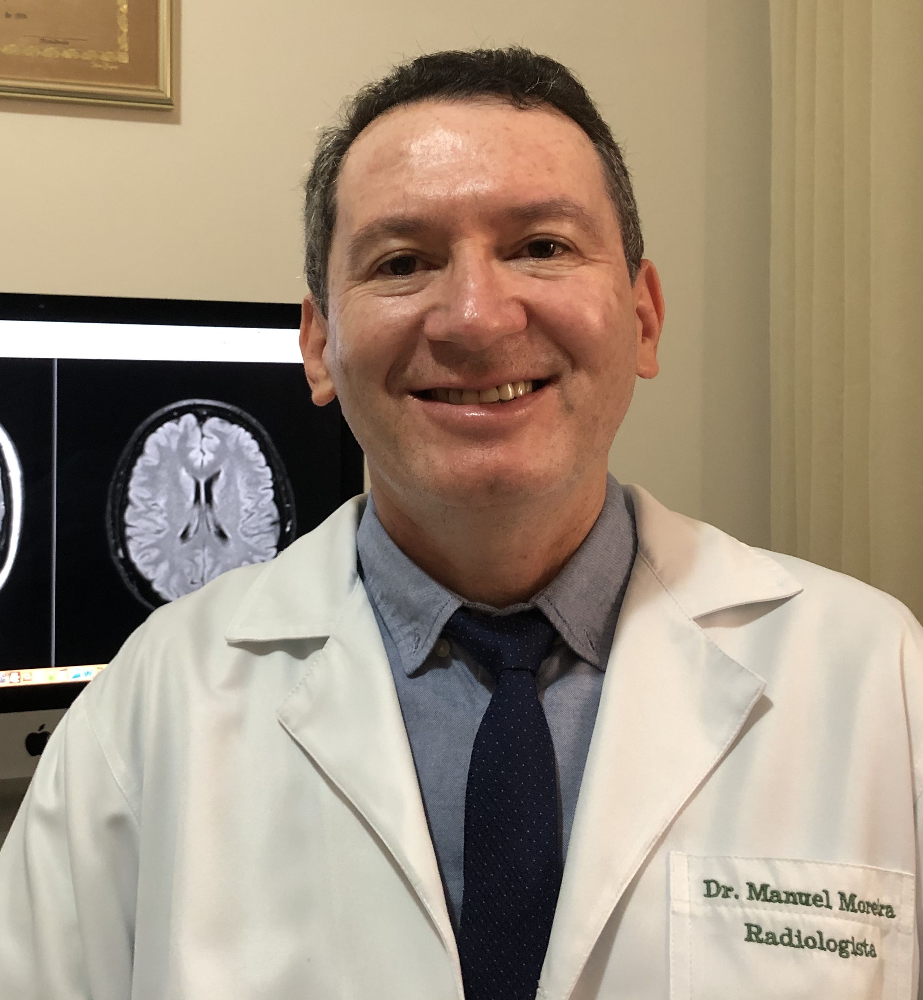
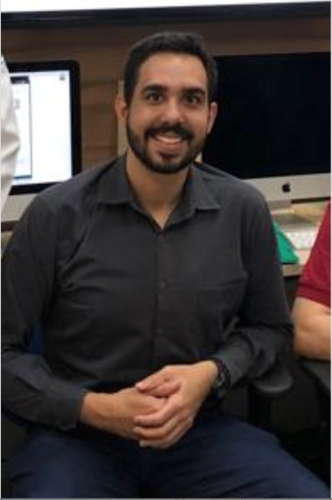

<section id="plataforma">


    <div class="container">

        <div class="texto">
            <h4>A Plataforma Neuro Rad</h4>
            <p> A plataforma NeuroRad foi desenvolvida como projeto do mestrado profissional em ensino na saude da UFRN
                dentro da linha de pesquisa ensino - aprendizagem e tecnologias educacionais na saude. Esta ferramenta
                visa disponibilizar de forma livre na internet o acesso a um banco de imagens radiológicas de casos
                clínicos de neurorradiologia apresentados e discutidos nas reuniões semanais do serviço de radiologia e
                diagnostico por imagem do Hospital Universitário Onofre Lopes da UFRN. Ao mesmo tempo que contribui com
                o aprendizado dos estudantes de graduação, residentes e especialistas, esta plataforma permite a
                perenidade deste arquivo digital para a instituição, além disso o banco de casos nele contido reflete a
                epidemiologia da nossa região.
            </p>

        </div>
        <div class="texto">
            <h4>Nosso time</h4>
            <p> A plataforma NeuroRad foi elaborada e implementada através da parceria entre o Dr Manuel Moreira Neto em
                seu projeto de mestrado profissional em ensino na saude, sob a orientação do professor Dr Clécio de
                Oliveira Godeiro Junior, com o Laboratório de Inovação Tecnológica em Saude(LAIS) da UFRN, com a
                participação da equipe da escola de programação sob a coordenação da pedagoga Danieli Rabelo, para isto
                foi constituído um time SCRUM multidisciplinar com designers, programadores e gerente de projeto.
            </p>

        </div>
        <div class="CardsTime">

            <div class="containerimg">
                
                <div class="overlay">
                    <div class="text">Administrador da
                        plataforma
                        Dr. Manuel Moreira
                        Radiologista
                    </div>
                </div>
            </div>
            <div class="containerimg">
                
                <div class="overlay">
                    <div class="text">Administrador da
                        plataforma
                        Dr. Clécio Godeiro
                        Neurologista</div>
                </div>
            </div>
            <div class="containerimg">
                
                <div class="overlay">
                    <div class="text">Administrador da
                        plataforma
                        Felipe Palitot 
                        Residente de Radiologia</div>
                </div>
            </div>

        </div>
          <div class="texto">
            <h4>Time de Desenvolvimento</h4>
            <p>
                <strong>Danieli Silva de Souza Rabelo</strong> - Learning Specialist,
                <strong>Inamar Pereira de Brito Junior</strong> - SCRUM Master Titular, 
                <strong>Fernando Lucas de Oliveira Farias</strong> - SCRUM Master Temporario,
                <strong>Mateus de Medeiros Jales</strong> - Desenvolvedor Back-end Senior,
                <strong>Luca Pareja Credidio Freire Alves</strong> - Desenvolvedor Back-end,
                <strong>Gabriel Machado da Costa Barros</strong> - Desenvolvedor Back-end,
                <strong>Matheus da Silva Oliveira</strong> - Desenvolvedor Back-end,
                <strong>Guilherme Pablo de Santana Maciel</strong> - Desenvolvedor Front-end,
                <strong>Deyvison Silas de Lima Santos</strong> - UX/UI Designer,
                <strong>Ana Gabriela Xavier Barros</strong> - UX/UI Designer,
                <strong>Daniela Aisha Silva de Souza Rabelo</strong> - UX/UI Designer.
            </p> 

        </div>


    </div>


</section>